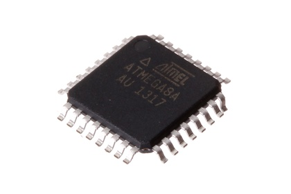

32 Pin SMD (TQFP) - ICS008

Summary
Name: 32 Pin SMD (TQFP)
ID: ICIC-QFP32-X-K8-01
Hex ID: ICS008
WebPage: https://github.com/oomlout/oomlout-OOMP/wiki/ICIC-QFP32-X-K8-01
Short URL: http://oom.lt/ICS008
Revision History: https://github.com/oomlout/oomlout-OOMP/blob/master/parts/ICIC-QFP32-X-K8-01/
| Type |
Size |
Color |
Description |
Index |
ICIC
|
QFP32
32 Pin SMD (TQFP) |
X
|
K8
AtMega8A |
01
|
Images
About
This part is awaiting a description.
Specifications
| Info |
Value |
| Size |
32 Pin SMD (TQFP) |
| Description |
AtMega8A |
Extra Details
Spotted a mistake, want to add more? Let us know oomp@oomlout.com
All images and resources are licensed [CC BY-SA] unless otherwise stated (ie. the datasheets)